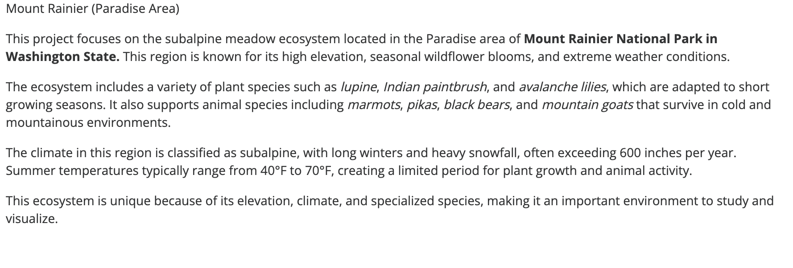

Featured design artifact
Env Design
Environmental design and visual composition artifact focused on the Mount Rainier Paradise Area ecosystem, using seasonal contrast, plant and animal studies, and ecosystem notes in one illustrated board.

Context
This project presents the Mount Rainier Paradise Area ecosystem as a visual communication board, with winter and summer conditions, plant and animal references, and environmental uniqueness notes arranged for quick scanning.
Process
The source package contains a final rendered PNG, a text reference screenshot, and an Illustrator working file. The deployable webpage exposes only the PNG assets so the page stays static and GitHub Pages safe.
Outcome
The final artifact shows environmental design, visual organization, and illustrated composition around one ecosystem topic.
Screenshots

